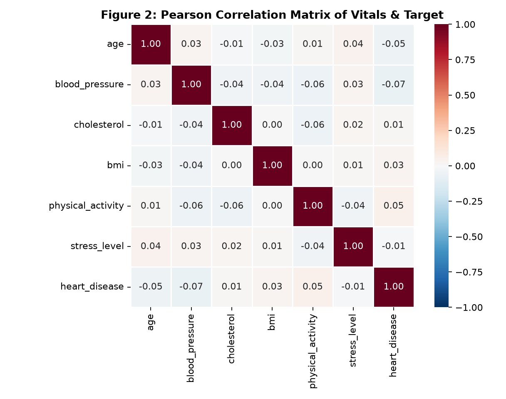
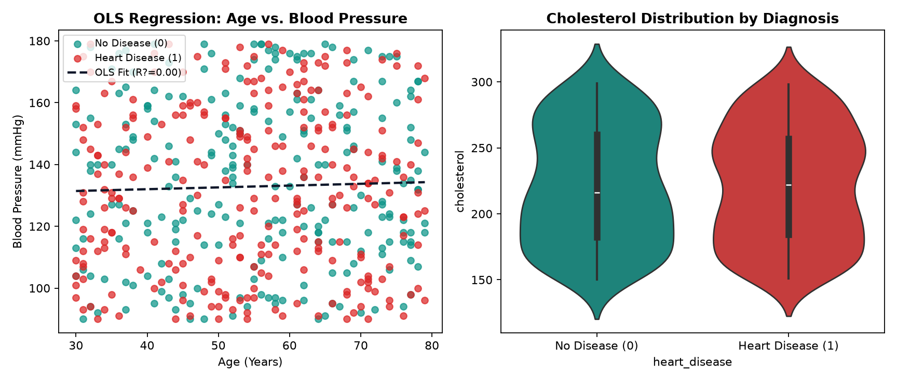
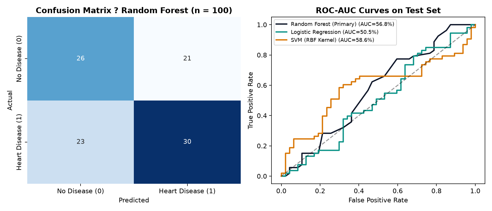

Quick-Test Clinical Patient Profiles
Load representative patient profiles or adjust the physiological sliders and categorical indicators below for live risk inference.
Diagnostic Risk Assessment
Predicted Class: 0 (Low Risk)
No Heart Disease
Model Confidence: 57.9%
Class 0 — No Heart Disease57.9%
Class 1 — Heart Disease Risk42.1%
Clinical Guidance: Continue routine annual preventive screening, balanced nutrition, and regular cardiovascular exercise.
Inspect Preprocessed Vector (StandardScaler + OneHotEncoder)
Patient Intake & Clinical Indicators
Categorical Predictors (OneHotEncoder)
Continuous Biometrics (StandardScaler)
Cohort Balance & Categorical Risk Factor Prevalence
N = 500 clinical records: 266 positive cases (53.2%) and 234 negative cases (46.8%).

Pearson Correlation Matrix & OLS Linear Regression
OLS Regression Fit: blood_pressure = 0.0582 × age + 129.6797 (r = 0.0315, R² = 0.0010).


Summary Statistics (N = 500)
| Feature | Mean | Std. Dev. | Min | Median (50%) | Max |
|---|---|---|---|---|---|
| age | 54.86 | 14.32 | 30.00 | 55.00 | 79.00 |
| blood_pressure | 132.87 | 26.42 | 90.00 | 132.00 | 179.00 |
| cholesterol | 221.50 | 43.86 | 150.00 | 221.00 | 299.00 |
| bmi | 29.02 | 6.40 | 18.10 | 29.20 | 40.00 |
| physical_activity | 2.05 | 1.42 | 0.00 | 2.00 | 4.00 |
| stress_level | 4.88 | 2.60 | 1.00 | 5.00 | 9.00 |
Hold-Out Confusion Matrix (Random Forest, n = 100)
Stratified 20% hold-out test split (53 positive Heart Disease cases, 47 negative cases).
26
True Negative (TN)
21
False Positive (FP)
23
False Negative (FN)
30
True Positive (TP)
Multi-Algorithm Evaluation Comparison
All classifiers trained inside a ColumnTransformer pipeline (StandardScaler + OneHotEncoder).
| Model Architecture | Accuracy | Precision | Recall | F1-Score | ROC-AUC | 5-Fold CV |
|---|---|---|---|---|---|---|
| Random Forest (100 Trees) | 56.00% | 58.82% | 56.60% | 57.69% | 56.80% | 49.20% ± 1.17% |
| Support Vector Machine (RBF) | 58.00% | 59.32% | 66.04% | 62.50% | 58.57% | 52.80% ± 4.45% |
| Logistic Regression | 55.00% | 55.56% | 75.47% | 64.00% | 50.46% | 52.20% ± 4.83% |
| K-Nearest Neighbors (k=5) | 50.00% | 52.73% | 54.72% | 53.70% | 47.69% | 48.40% ± 3.32% |
ROC-AUC Curves, Model Benchmark & Feature Importance
